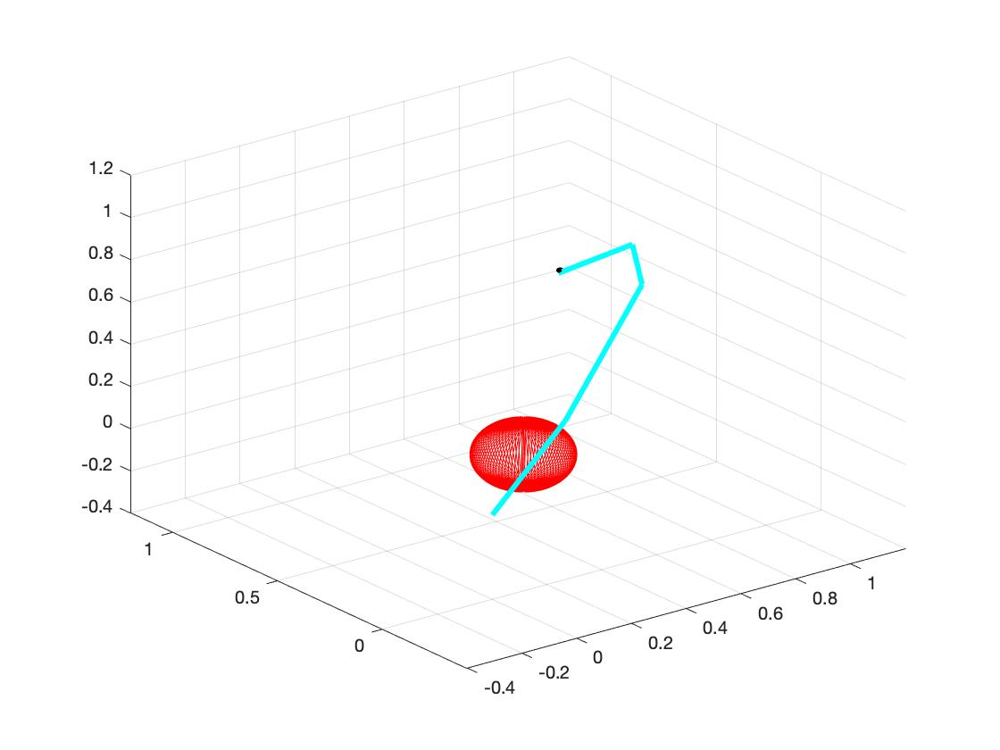
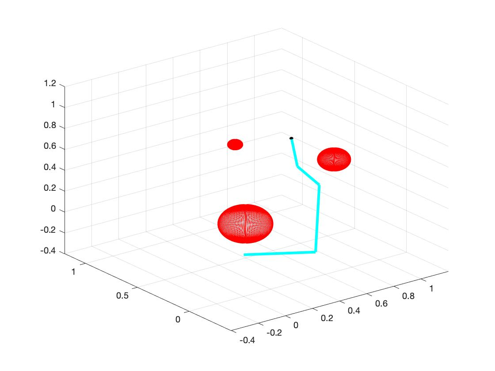
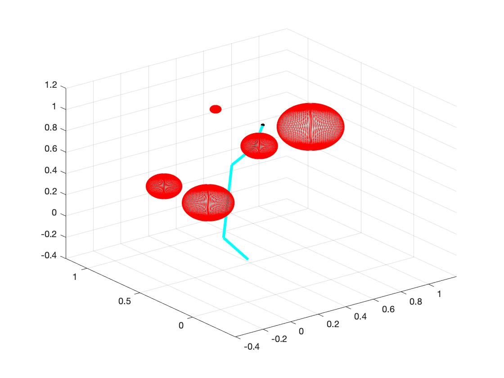
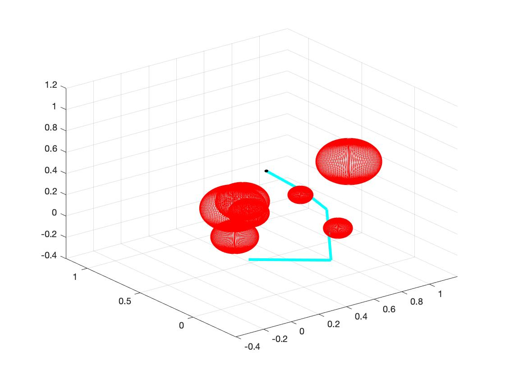
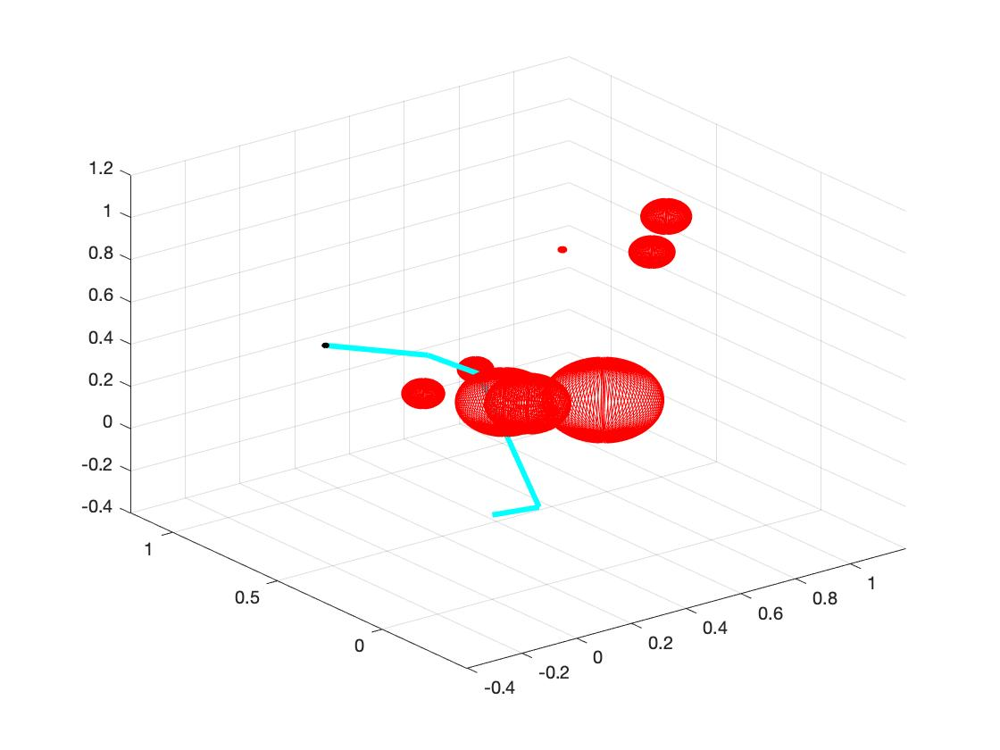
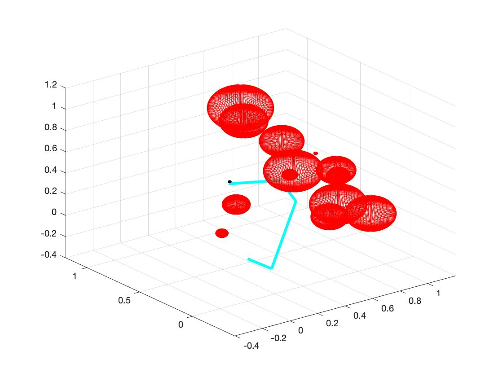
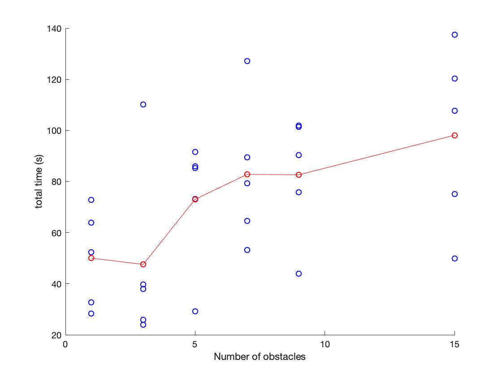
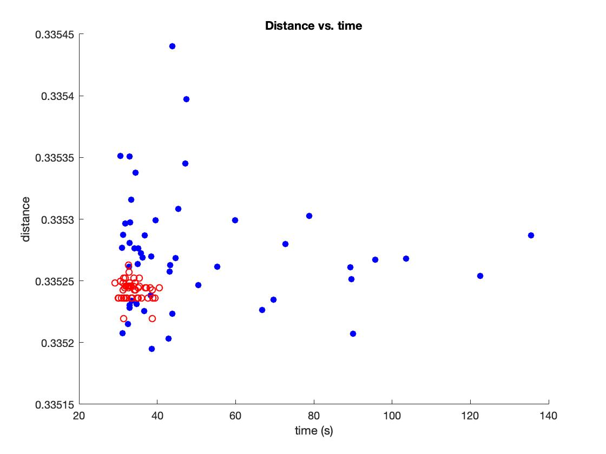

The main goal of this part is to reach the target with certain input angles. To gain this goal, first we need to do forward kinematics and use optimization to find the right angles. Then we output the angles to the inverse kinematics part. The details are shown as follows:
1. Forward kinematics:
a. Use transformation matrix to determine the position of last link: The "eul2tform" function in MATLAB can turn the Euler angles into transformation matrix. We can calculate from first link to last link to get the transformation matrix T1, T2, ..., Tn from each joint. The final transformation matrix of last link (Tf) is simply the multiplication of each matrix, i.e. Tf=T1*T2*...*Tn.
2. Optimization:
a. Score function: The form of score function is (position - target)'*(position - target). It means the Euclidean distance between target and our position.
b. Penalty function: To avoid the joints reaching limit angles and links intersecting with obstacles, we add penalty function into score function in the form of alpha/distance. Here "alpha" is a constant to adjust the influence of penalty function, and "distance" is the distance from angle of joint to limit angle or distance from link to obstacles.
c. Optimization function: We choose the "fmincon" function in MATLAB to do optimization.
d. Optimization algorithm: SQP
3. Evaluation:
a. Use random initial joints to do optimization 20 times; Pick the finial joints with shortest distance from final position to target.
b. Set the random obstacles with number of 1, 3, 5, 7, 9, 15. The following plots show the links reach the target with different number of obstacles.
  
  
c. As the number of obstacles increases, the mean time of searching the target increases. (In fact I think the main reason of time increasing is not the number of obstacles, but is whether the position of obstacles "blocking" the links from target. Moreover, I think we can carefully examine the space that links can move and find out the influence of the position of obstacles.) The following plot shows the relation between time cost and number of obstacles.

The task of this part is to test the influence of adding derivative.
1. Calculating Gradient:
a. We use differences to represent derivative of variable. For example, when we calculate the gradient of certain angle "angle", we add "epsilon" to this angle (angle+epsilon) and keep other angles unchanged to get new "score". Then we use new "score" minus origin score, and use "epsilon" dividing the result. I.e. gradient = (Score(angle+epsi)-Score(angle))/epsi.
2. Comparison to Non-gradient:
a. When using the gradient, the algorithm may be a little faster with certain initialization. But sometime the algorithm with gradient costs more time to find the minimum. As shown in the figure below, the blue points represent the algorithm with gradient and the red points represent the algorithm without gradient. The algorithm without gradient appears more steady. (I think gradient calculating method may influence the performance of algorithm with gradient.)

This part mainly tests the performance of different algorithms. We measure the time and distance from target to final position.
The test set has 3 obstacles and target is at (0.5, 0.5, 0.5) with quaternion value [1,0,0,0]. The radius of obstacles is 0.05 and obstacles are at position (0.3, 0.1, 0.1), (0.1, 0.3, 0.1), (0.1, 0.1, 0.3). The target and obstacles are shown as above.
1. SQP:
2. Interior Point:
3. Active-Set:
4. Trust-Region-Reflective:
5. CMA-ES: